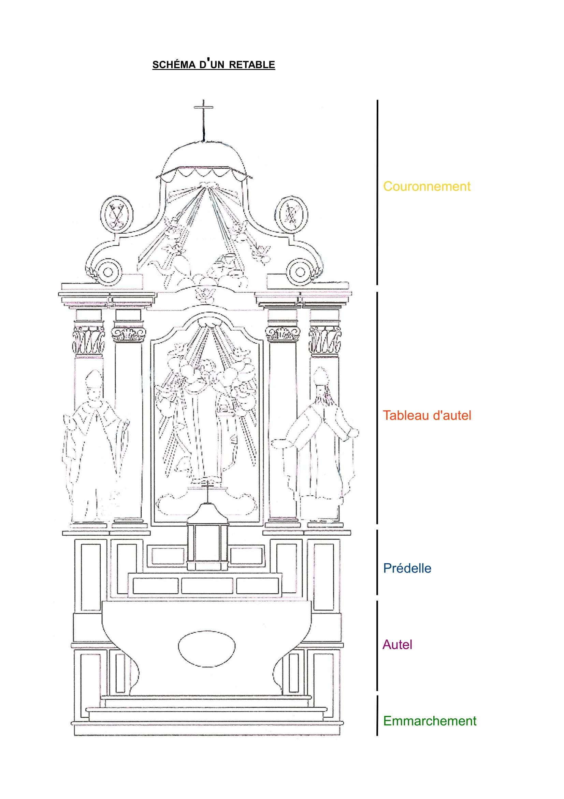

« Retables »
Texte écrit par un collectif
Un essai en quatre temps pour comprendre les retables de Flandre française : leurs matériaux, leur structure, leur histoire et leur emplacement dans nos églises.

Schéma type d'un retable de Flandre
Matériaux : faux marbre et polychromie
L'ensemble des retables de Flandre française constitue un corpus homogène, formant à l'intérieur de l'arrondissement de Dunkerque, de la mer du Nord à la Lys, un ensemble cohérent par son époque, sa structure architecturale et son matériau : le bois.
Les forêts de Nieppe et de Clairmarais fournissaient le chêne, dont sont faits les lambris, les confessionnaux, les chaires, les tables de communion et certains retables qui, cirés ou vernis, reçoivent éventuellement quelques rehauts de dorure. Mais là où l'on croit voir le marbre et le bronze, on rencontre encore le bois, la peinture, la dorure. La structure, sans exclure parfois le recours à quelques éléments en chêne, est constituée de planches de bois résineux, matériau d'importation issu d'un commerce traditionnel entre les pays nordiques et Dunkerque depuis le Moyen Âge.
La statuaire et le décor d'applique sont réalisés dans des bois locaux — essentiellement des tilleuls, mais aussi des aulnes, bouleaux, peupliers et ormes. La polychromie apporte à l'ensemble une cohérence finale, certains détails relevés d'or accrochant la lumière.
Structure architecturale
Cette définition fixe une fonction — il ne peut y avoir de retable sans autel — et laisse la forme libre de varier suivant le temps et le lieu.
La forme la plus communément associée à l'idée de retable étant les triptyques et les polyptyques peints ou sculptés, universellement répandus dans l'Occident médiéval. Toute cette production reste du domaine de l'objet d'art aisément déplaçable.
Évolution historique
À partir de la 2e moitié du XVIe siècle, en concordance avec l'affirmation de la Contre-Réforme catholique, apparaît une nouvelle famille de retables monumentaux, à caractère triomphal, dont la composition est inspirée d'ouvrages d'architecture. Les retables de Flandre française appartiennent à cet ensemble.
Les atroces guerres politico-religieuses qui ont ravagé la Flandre dans la 2e moitié du XVIe siècle avaient provoqué la destruction ou la mise à mal d'un grand nombre d'églises. La reconstitution du patrimoine religieux intervint en deux temps :
- Dès les années 1590 : les édifices sont rebâtis ou restaurés.
- Puis dans la 2e moitié du XVIIe siècle : l'ameublement est réalisé progressivement.
Les retables baroques flamands se sont élevés après la période des incertitudes et des controverses, au sein d'une stabilité et à cause d'elle. L'architecture des retables, inspirée directement de la Contre-Réforme, est le miroir d'un système que l'on sent, à l'époque, comme complet et définitif.
Emplacement dans l'église
L'emplacement des autels-retables est évidemment fonction du plan du bâtiment. Le plan le plus fréquent en Flandre, celui de l'église-halle, se caractérise par l'existence de trois vaisseaux de hauteur et de largeur sensiblement égales, sans véritable transept ni chapelles latérales ou absidiales.
Les trois absides accueillent chacune un autel : maître-autel au centre, autels secondaires de part et d'autre, accompagnés de leur retable. L'église flamande offre donc au fidèle qui remonte l'allée centrale la vision simultanée de ces trois grands retables. Cette scénographie est encore plus frappante lorsque les deux retables latéraux fonctionnent en pendants ou jouent d'un effet de symétrie.
Sur l'autel est posé un tabernacle. Sa présence à cet endroit est nouvelle. Avant la Contre-Réforme, les hosties étaient généralement conservées dans une armoire dans le mur ou dans une tour eucharistique. Une exposition surmonte souvent le tabernacle, pouvant pivoter et dévoiler plusieurs positions : pour l'Eucharistie, pour la croix, et parfois une troisième pour les reliques.
Bibliographie
- Luc DELEPLANQUE, abbé, Le Catholicisme Tridentin dans les Pays-Bas du Sud, cours de formation de guides, Merville, septembre 2001.
- Geneviève DUPREZ, Architecture et Trésors des Églises de Flandre, Association Retables de Flandre, 1997.
- Philippe HERTEL, Anita OGER-LEURENT, Les retables de Flandre française des XVIIe, XVIIIe et XIXe siècles, in 11es Journées d'études SFIIC, Colloque international, Roubaix, 2004.